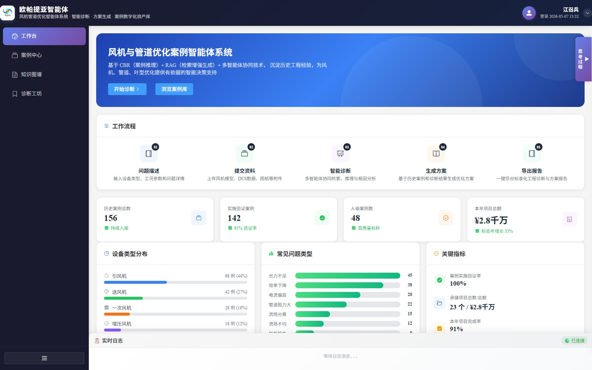
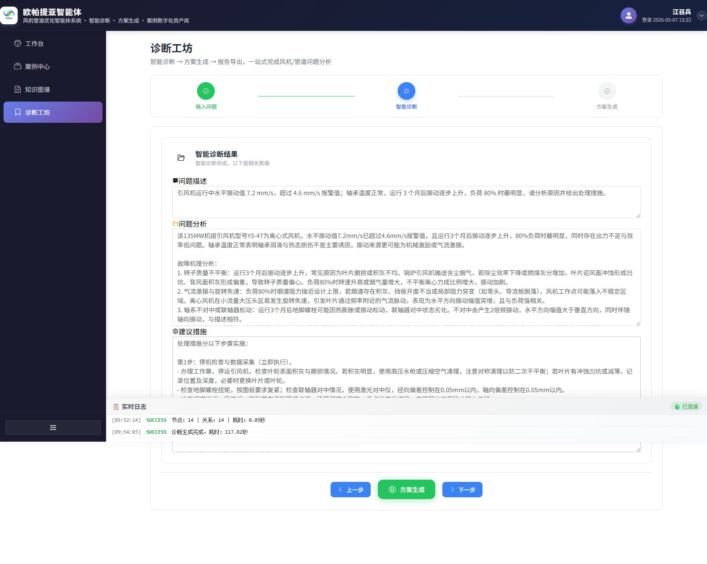
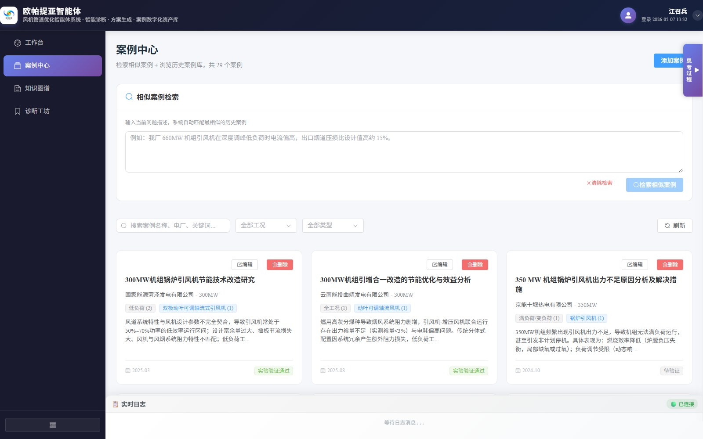
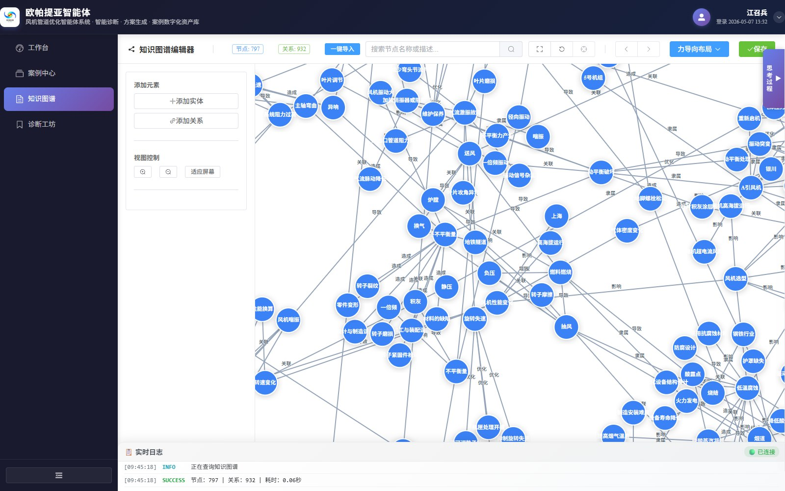
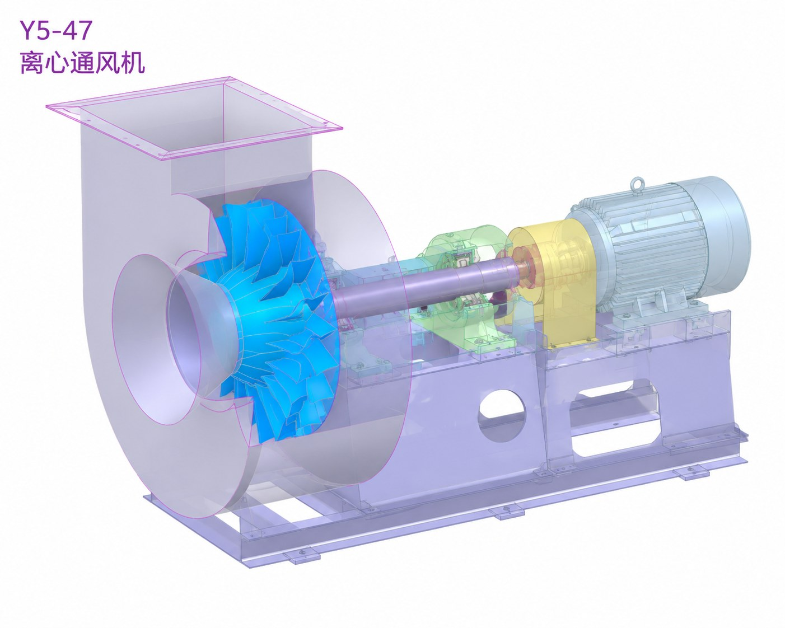
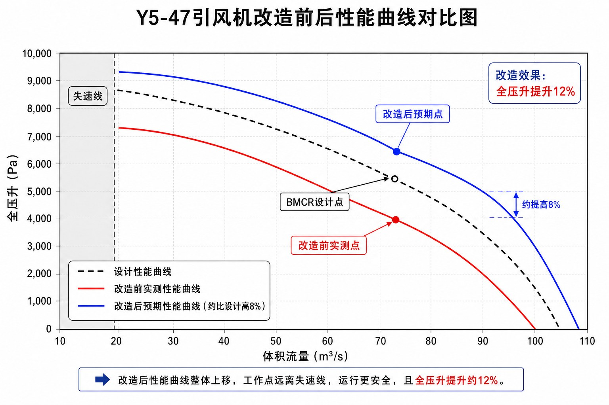
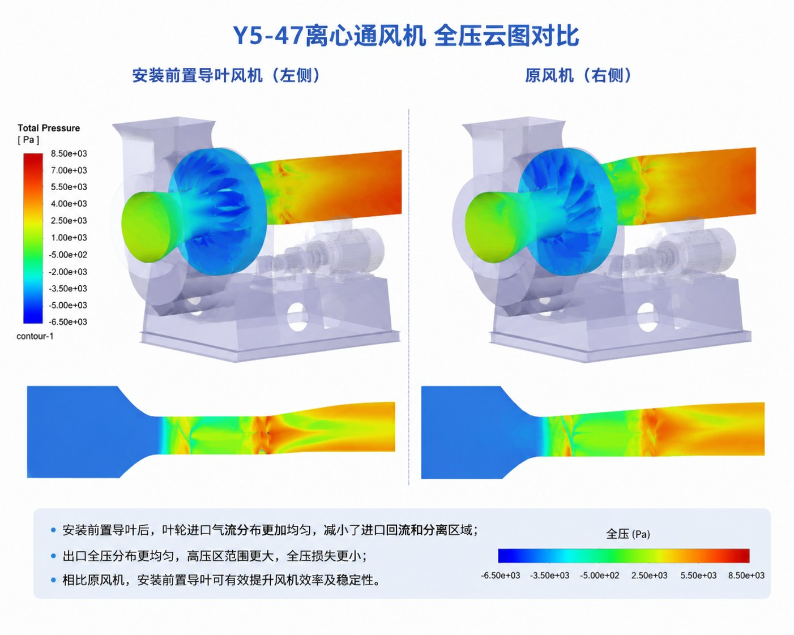
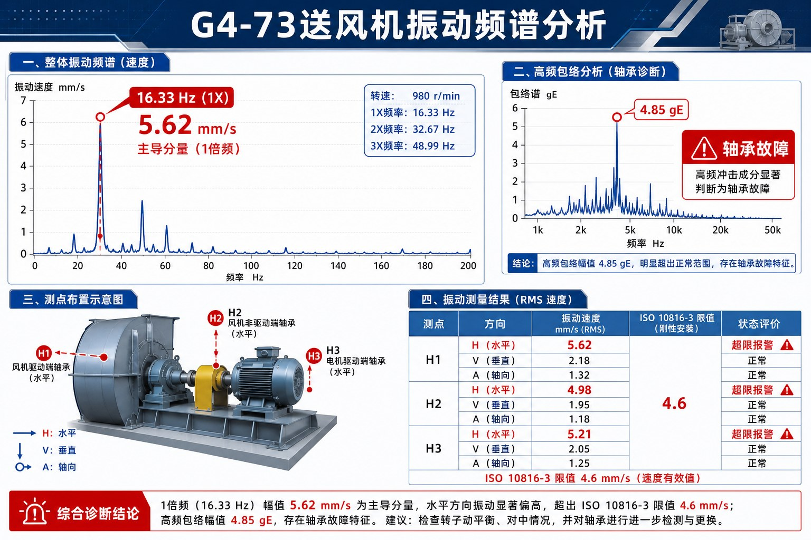

FanAI 风机优化智能体 桌面本地版
面向火电厂风机叶形优化与提能增效的全流程智能体系统 · 29 条优化案例 · CBR + 知识图谱双检索 · 智能诊断实测 62–148 s · 方案报告与配图生成 · 797 节点 / 932 关系知识图谱
FanAI 是面向火电厂风机叶形优化与提能增效的全流程智能体系统（工程内部名称：风机与管道优化案例智能体系统）： 以历史优化案例库与知识图谱为知识底座，串联 CBR 案例推理、知识图谱检索（GraphRAG 双检索架构，向量库需配置 embedding 额度后启用） 与多智能体协同，把工程师的问题描述与工程资料转化为可追溯的诊断结论与 可导出的优化方案报告。系统内置 29 条火电厂风机/烟风道优化案例 （覆盖 60–1000 MW 机组的引风机、送风机、一次风机、空冷风机及烟道/风道、叶片与导叶改造；其中 24 条已核验）， 知识图谱当前含 797 个实体节点、932 条关系。诊断时以案例库自然语言转 SQL 检索 （MySQL + DeepSeek 大模型）为主、知识图谱检索为辅，推理过程实时可见；实测单次智能诊断 62–148 s，返回「问题分析 + 建议措施」两段式结论（示例约 754 字 / 990 字）并引用历史案例编号。 方案报告自动配图并支持一键导出 Word；另提供基于 Neo4j 的知识图谱编辑器。 软件为本地部署的 Web 应用（Vue 3 前端 + Spring Boot 后端 + FastAPI 智能体服务 + MySQL/Neo4j/LanceDB）， 全部服务在作者本机运行，数据不出本机。

工作台总览：左侧为四个功能入口（工作台 / 案例中心 / 知识图谱 / 诊断工坊），主区为五步工作流程
（问题描述 → 提交资料 → 智能诊断 → 生成方案 → 导出报告）、历史案例与项目关键指标、
设备类型分布、常见问题类型与实时日志。
注：工作台统计卡为界面演示数据（156 / 142 / 48 / ¥2.8 千万），案例库实际入库 29 条（24 条已核验），详见下方案例库统计。
主要功能
29 条优化案例（24 条已核验）· 60–1000 MW 机组 · 知识图谱 797 节点 / 932 关系 · 单次智能诊断 62–148 s · 8 类工程资料 · 25 个 REST 控制器 / 30 张数据表 · 6 个智能体 REST 接口 + 1 个 WebSocket 日志流 · 前端 Vue 3 + Vite + Element Plus
系统组成
| 组成 | 技术栈 | 职责 |
|---|---|---|
| 前端界面 | Vue 3 + Vite + Element Plus（知识图谱基于 Cytoscape） | 工作台 / 案例中心 / 诊断工坊 / 知识图谱编辑器四个功能入口 |
| 业务后端 | Spring Boot + MyBatis-Plus | 25 个 REST 控制器：案例、设备、项目、CFD、叶片、三维模型、报告、用户角色等业务数据接口 |
| 智能体服务 | FastAPI + GraphRAG 架构（DeepSeek 对话模型 + 图像生成；向量检索需配置 embedding 额度） | 智能诊断、方案与配图生成、图谱查询/导入、资料上传解析、思考过程推送 |
| 数据层 | MySQL + Neo4j + LanceDB | 案例与业务数据 / 知识图谱（797 节点 / 932 关系）/ 向量索引（GraphRAG 架构，需配置额度） |
| 启动方式 | 本机一键启动脚本 | 按序拉起 MySQL → Neo4j → 业务后端 → 智能体服务 → 前端界面（约 1 分钟） |
内置案例库
案例库现收录 29 条火电厂风机与烟风道优化案例，覆盖 60–1000 MW 机组；其中 25 条标注机组容量、 24 条标注为已核验，5 条给出 8.8–9.5 的案例质量评分。问题类型涵盖效率低/能耗高、出力不足、阻力大/流场不均、 振动大、失速风险、深度调峰、选型裕量大、腐蚀/泄漏与调节性能差等。
| 设备 / 系统类别 | 案例数 | 涉及机组容量 |
|---|---|---|
| 引风机 / 增压风机（含引增合一、前置导叶改造） | 12 | 135–1000 MW |
| 送风机（含动叶可调轴流、双模态协同改造） | 8 | 60–660 MW |
| 叶片 / 导叶（全三维气动优化、反预旋、前置导叶） | 3 | 320–660 MW |
| 烟道 / 风道 / 管道（流场均匀性与降阻优化） | 2 | 300–330 MW |
| 空冷风机、一次风机及其他（含进气格栅、离心风机） | 4 | 135–600 MW |
| 合计 | 29 | 60–1000 MW（25 条标注容量） |
知识图谱当前含 797 个实体节点 / 932 条关系（Neo4j，实时日志实测查询耗时 0.06 秒）。 案例来源为公开文献与工程资料整理，案例字段与数值以原始资料及现场实测为准；诊断结论与方案报告中的数值为检索与生成结果， 工程应用前须由专业工程师复核。
运行界面
诊断工坊（输入问题）：填写设备型号、机组容量与运行工况，多选问题类型（出力不足 / 效率下降 / 电流偏高 / 振动超标 / 噪声过大 / 磨损严重），输入问题描述；可一键套用历史案例 （Y5-47、G4-73、SAF26.6-17-2 等），并展开「提交相关资料」上传工程资料。

智能诊断结果：上方为问题描述（引风机 Y5-47 水平振动 7.2 mm/s、超过 4.6 mm/s 报警值）， 下方依次给出「问题分析」（故障机理分条论证）与「建议措施」（分步骤可执行），可直接进入方案生成； 实时日志显示知识图谱查询（14 节点 / 14 关系、0.05 秒）与「诊断生成完成，耗时 117.82 秒」。 实测单次诊断 62–148 s，输出分析约 754 字、建议约 990 字。

案例中心：内置 29 条火电厂风机与风道优化案例；上方「相似案例检索」按问题描述匹配 最相似历史案例，下方支持按名称/电厂/关键词搜索与工况、类型筛选；案例卡片给出机组容量、设备/风机类型、 工况与问题标签以及验证状态（实验验证通过 / 待验证）。

知识图谱编辑器：Neo4j 图谱 797 个实体节点、932 条关系，力导向布局； 左侧可添加实体/关系、控制视图，顶部可一键导入、按名称或描述搜索、切换布局 （力导向 / 网格 / 环形 / 层次 / 同心圆）并保存；底部实时日志显示图谱查询耗时 0.06 秒。
内置案例资料
案例库与诊断输出中使用的技术资料图示例（Y5-47 引风机三维模型、改造前后性能曲线、全压云图对比、 G4-73 送风机振动频谱分析），用于说明智能诊断与方案生成的证据形态。

Y5-47 离心通风机整机三维模型（叶轮 / 蜗壳 / 传动组 / 电机分色），案例几何与设备信息来源。

Y5-47 引风机改造前后性能曲线对比：设计性能线 / 改造前实测运行点 / 改造后性能曲线。

安装前置导叶前后全压云图对比（左：安装前置导叶；右：原风机），流场与阻力论证依据。

G4-73 送风机振动频谱与高频包络分析：1 倍频主导、轴承故障特征与 ISO 10816-3 限值对照。
获取与运行
- 软件部署在作者本机（本地 Web 应用，全部服务在本机运行，数据不出本机）；本页面为软件介绍， 外部访客无法直接打开软件。
- 本机运行：由作者执行一键启动脚本，按序拉起 MySQL、Neo4j、 业务后端、智能体服务与前端界面（首次约 1 分钟）；服务就绪后在本机浏览器打开前端界面即可使用。
- 日常使用：前端界面四个功能入口——工作台、案例中心、诊断工坊、 知识图谱；诊断工坊内按「问题信息 → 工程资料 → 智能诊断 → 方案生成 → 导出报告」流程操作。
数据与说明
案例库数据（29 条火电厂风机/烟风道优化案例）来自公开文献与工程资料整理， 其中 24 条标注为已核验；案例中的机组容量、设备型号、问题与效果数值以原始资料与现场实测为准。 知识图谱由 GraphRAG 管线构建，当前含 797 个实体节点 / 932 条关系； 系统采用「案例库 + 知识图谱」双检索架构，当前部署环境因 embedding 额度受限， 向量检索暂未启用，智能诊断实际以 MySQL 案例库检索 + DeepSeek 大模型为主， 知识图谱浏览/编辑功能独立可用。诊断结论与优化方案由大模型结合检索证据生成， 生成内容用于辅助工程师分析与决策，不替代设计计算、CFD 仿真与现场试验， 工程应用前须经专业工程师复核。本页界面截图为本次系统真实运行的浏览器截图（1600 px 宽）， 案例资料图为案例库技术资料示例；软件当前为内部演示版本，功能范围与数据覆盖以实际部署版本为准。